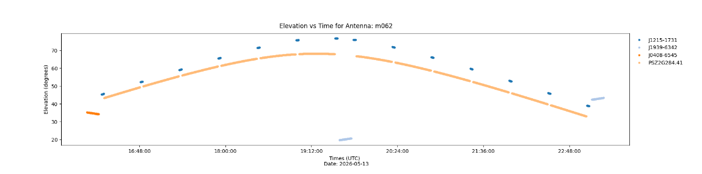

Observation Overview
Sources, array participation, spectral configuration, and observing conditions.
Sources and scan intents
Science targets and calibration sources used in the observation
| ID | Source | RA | Dec | Scan intent | Dumps | Model (Jy) | Derived (Jy) |
|---|---|---|---|---|---|---|---|
| 0 | J1939−6342 | 19:39:25.03 | −63:42:45.6 | CALIBRATE_FLUX | 450 | 14.9 | — |
| 1 | J0408−6545 | 04:08:20.38 | −65:45:09.1 | CALIBRATE_BANDPASS | 525 | 23.4 | 24.60 |
| 2 | J0522−3627 | 05:22:57.98 | −36:27:30.8 | CALIBRATE_PHASE | 700 | 8.3 | 5.80!Model / derived flux > 0.1 |
| 3 | ELAIS-S1 | 00:37:48.00 | −44:00:00.0 | TARGET | 1,225 | — | 0.85 |
| 4 | PKS 0349−27 | 03:51:07.93 | −27:44:35.7 | TARGET | 700 | — | 3.20 |
| 5 | NGC 1566 | 04:20:00.40 | −54:56:16.0 | TARGET | 700 | — | 0.42 |
| 6 | RXC J0528.9−3927 | 05:28:53.80 | −39:27:00.0 | TARGET | 1,400 | — | 0.15 |
| 7 | J0252−7104 | 02:52:46.20 | −71:04:36.5 | CALIBRATE_POLARIZATION | 600 | 1.3 | 1.40 |
Scan list
CASA listobs-style observation sequence
42 scans
Scan list
CASA listobs-style observation sequence
| Scan | Start time (UTC) | End time (UTC) | Field | SpW | Intent |
|---|
Stations used
SKA-Low station health during the observation
Core stations · 136
Remote stations · 71
Healthy (196)Degraded (8)Offline (3)
Telescope and hardware issues
Station, correlator, timing, and transport events recorded during the observation
Critical
Stations S024, S089 and S174 offline
No station beam data received. The stations were excluded from correlation for the full observation; uv-coverage impact remained below the blocking threshold.
Full observation
Warning
Correlator node CBF-07 degraded
Intermittent packet loss affected 0.18% of visibilities on spectral window 2. Missing integrations were flagged automatically.
22:14–22:31 UTC
Resolved
Station timing offsets
S041, S103 and S188 exceeded the 2 ns advisory tolerance. Clock models were refreshed and offsets returned to nominal.
Resolved 21:46 UTC
Resolved
Data transport congestion
Brief congestion on the remote-station ingest path increased buffer occupancy to 82%. No science data were lost.
Resolved 23:07 UTC
Spectral setup
Continuum and zoom configurations
LOW_CONT_110_350Continuum
Frequency110–350 MHz
Channels4,096
Resolution58.6 kHz
LOW_ZOOM_150Zoom 1
Centre150.000 MHz
Channels16,384
Resolution0.76 kHz
LOW_ZOOM_325Zoom 2
Centre325.000 MHz
Channels8,192
Resolution1.53 kHz
Observing conditions
Median values over the observation
Air temperature18.4 °C16.9–20.1 °C
Relative humidity31%Stable
Wind speed4.8 m/sGusts 7.2 m/s
Precipitation0.0 mmClear
Ionospheric TEC6.3 TECUVariation 0.8 TECU
Scintillation index0.12Quiet
Geomagnetic Kp2Unsettled to quiet
Cloud cover8%Mostly clear
Solar elevation−24.6°Astronomical night
Target elevation
Elevation vs time for science targets and calibrators

Static interface mock-up · representative observation data only